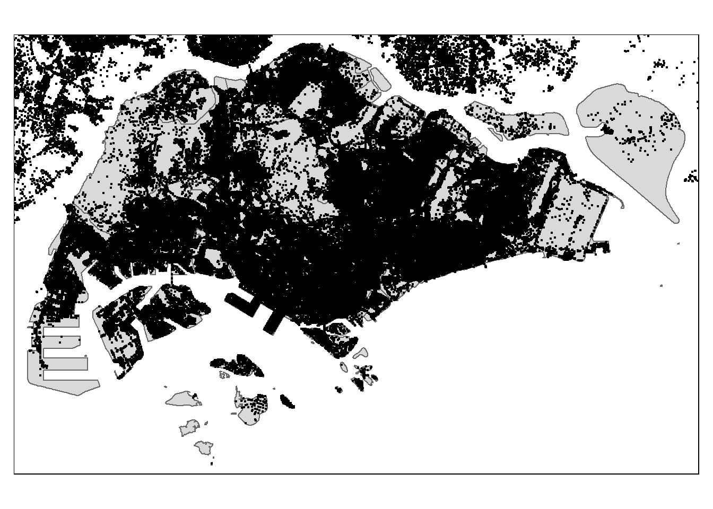

pacman::p_load(sf, tidyverse, tmap, arrow, lubridate)1.0 Getting Started
2.0 Spatial Data Wrangling
2.1 Importing the spatial data
Aspatial Data
#grabMe <- read_parquet("../../data/TakeHome/TakeHome_01/aspatial/part-00000.parquet")
#head(grabMe, n=3)Geospatial Data
roadMe <- st_read("../../data/TakeHome/TakeHome_01/geospatial",
layer = "gis_osm_roads_free_1")
head(roadMe, n=3)islandMe <- st_read("../../data/TakeHome/TakeHome_01/geospatial/MasterPlan2019SubzoneBoundaryNoSeaKML.kml")
head(islandMe, n=3)road_df <- read_rds("../../data/TakeHome/TakeHome_01/rds/road_df.rds")
island_df <- read_rds("../../data/TakeHome/TakeHome_01/rds/island_df.rds")
Note
Using the crs info function to retrieve the referencing system information of these geospatial data.
crs_info1 <- st_crs(road_df)
crs_info2 <- st_crs(island_df)
crs_info1Coordinate Reference System:
User input: WGS 84
wkt:
GEOGCRS["WGS 84",
DATUM["World Geodetic System 1984",
ELLIPSOID["WGS 84",6378137,298.257223563,
LENGTHUNIT["metre",1]]],
PRIMEM["Greenwich",0,
ANGLEUNIT["degree",0.0174532925199433]],
CS[ellipsoidal,2],
AXIS["latitude",north,
ORDER[1],
ANGLEUNIT["degree",0.0174532925199433]],
AXIS["longitude",east,
ORDER[2],
ANGLEUNIT["degree",0.0174532925199433]],
ID["EPSG",4326]]crs_info2Coordinate Reference System:
User input: WGS 84
wkt:
GEOGCRS["WGS 84",
DATUM["World Geodetic System 1984",
ELLIPSOID["WGS 84",6378137,298.257223563,
LENGTHUNIT["metre",1]]],
PRIMEM["Greenwich",0,
ANGLEUNIT["degree",0.0174532925199433]],
CS[ellipsoidal,2],
AXIS["geodetic latitude (Lat)",north,
ORDER[1],
ANGLEUNIT["degree",0.0174532925199433]],
AXIS["geodetic longitude (Lon)",east,
ORDER[2],
ANGLEUNIT["degree",0.0174532925199433]],
ID["EPSG",4326]]
Note
Changing the referencing system to Singapore national projected coordinate system.
road_sf <- st_transform(road_df, crs = 3414)
island_sf <- st_transform(island_df, crs = 3414)2.2 Mapping the geospatial data sets
Note
After checking the referencing system of each geospatial data data frame, it is also useful for us to plot a map to show their spatial patterns.
tmap_mode("plot")
tm_shape(island_sf) +
tm_polygons() +
tm_shape(road_sf) +
tm_dots()
3.0 Geospatial Data wrangling
3.1 Converting sf data frames to sp’s Spatial* class
Note
The code chunk below uses as_Spatial() of sf package to convert the three geospatial data from simple feature data frame to sp’s Spatial* class.
island_sf <- island_sf[st_is_valid(island_sf), ]
# Identify empty geometries
empty_geoms <- st_is_empty(island_sf)
# Remove features with empty geometries
island_sf <- island_sf[!empty_geoms, ]
island_sf <- st_zm(island_sf)island <- as_Spatial(island_sf)
road <- as_Spatial(road_sf)islandclass : SpatialPolygonsDataFrame
features : 319
extent : 4344.149, 50271.73, 26375.86, 50256.33 (xmin, xmax, ymin, ymax)
crs : +proj=tmerc +lat_0=1.36666666666667 +lon_0=103.833333333333 +k=1 +x_0=28001.642 +y_0=38744.572 +ellps=WGS84 +towgs84=0,0,0,0,0,0,0 +units=m +no_defs
variables : 2
names : Name, Description
min values : kml_1, <center><table><tr><th colspan='2' align='center'><em>Attributes</em></th></tr><tr bgcolor="#E3E3F3"> <th>SUBZONE_NO</th> <td>1</td> </tr><tr bgcolor=""> <th>SUBZONE_N</th> <td>ANAK BUKIT</td> </tr><tr bgcolor="#E3E3F3"> <th>SUBZONE_C</th> <td>BTSZ01</td> </tr><tr bgcolor=""> <th>CA_IND</th> <td>N</td> </tr><tr bgcolor="#E3E3F3"> <th>PLN_AREA_N</th> <td>BUKIT TIMAH</td> </tr><tr bgcolor=""> <th>PLN_AREA_C</th> <td>BT</td> </tr><tr bgcolor="#E3E3F3"> <th>REGION_N</th> <td>CENTRAL REGION</td> </tr><tr bgcolor=""> <th>REGION_C</th> <td>CR</td> </tr><tr bgcolor="#E3E3F3"> <th>INC_CRC</th> <td>4BAD8B2C9CEBF3F2</td> </tr><tr bgcolor=""> <th>FMEL_UPD_D</th> <td>20191223152313</td> </tr></table></center>
max values : kml_99, <center><table><tr><th colspan='2' align='center'><em>Attributes</em></th></tr><tr bgcolor="#E3E3F3"> <th>SUBZONE_NO</th> <td>9</td> </tr><tr bgcolor=""> <th>SUBZONE_N</th> <td>YISHUN WEST</td> </tr><tr bgcolor="#E3E3F3"> <th>SUBZONE_C</th> <td>YSSZ09</td> </tr><tr bgcolor=""> <th>CA_IND</th> <td>N</td> </tr><tr bgcolor="#E3E3F3"> <th>PLN_AREA_N</th> <td>YISHUN</td> </tr><tr bgcolor=""> <th>PLN_AREA_C</th> <td>YS</td> </tr><tr bgcolor="#E3E3F3"> <th>REGION_N</th> <td>NORTH REGION</td> </tr><tr bgcolor=""> <th>REGION_C</th> <td>NR</td> </tr><tr bgcolor="#E3E3F3"> <th>INC_CRC</th> <td>95C11920195B86C7</td> </tr><tr bgcolor=""> <th>FMEL_UPD_D</th> <td>20191223152313</td> </tr></table></center> #road3.2 Converting the Spatial* class into generic sp format
Note
Since spatstat requires the analytical data in ppp object form. There is no direct way to convert a Spatial* classes into ppp object. We need to convert the Spatial classes* into Spatial object first.
The codes chunk below converts the Spatial* classes into generic sp objects.
island_sp <- as(island, "SpatialPolygons")
#road_sp <- as(road, "SpatialPoints")island_spclass : SpatialPolygons
features : 319
extent : 4344.149, 50271.73, 26375.86, 50256.33 (xmin, xmax, ymin, ymax)
crs : +proj=tmerc +lat_0=1.36666666666667 +lon_0=103.833333333333 +k=1 +x_0=28001.642 +y_0=38744.572 +ellps=WGS84 +towgs84=0,0,0,0,0,0,0 +units=m +no_defs #road_sp#sg_owin <- as(island_sp, "owin")
#plot(sg_owin)3.3 Converting the generic sp format into spatstat’s ppp format
Note
Now, we will use as.ppp() function of spatstat to convert the spatial data into spatstat’s ppp object format.
#road_ppp <- as(road_sp, "ppp")
#road_ppp#plot(road_ppp)